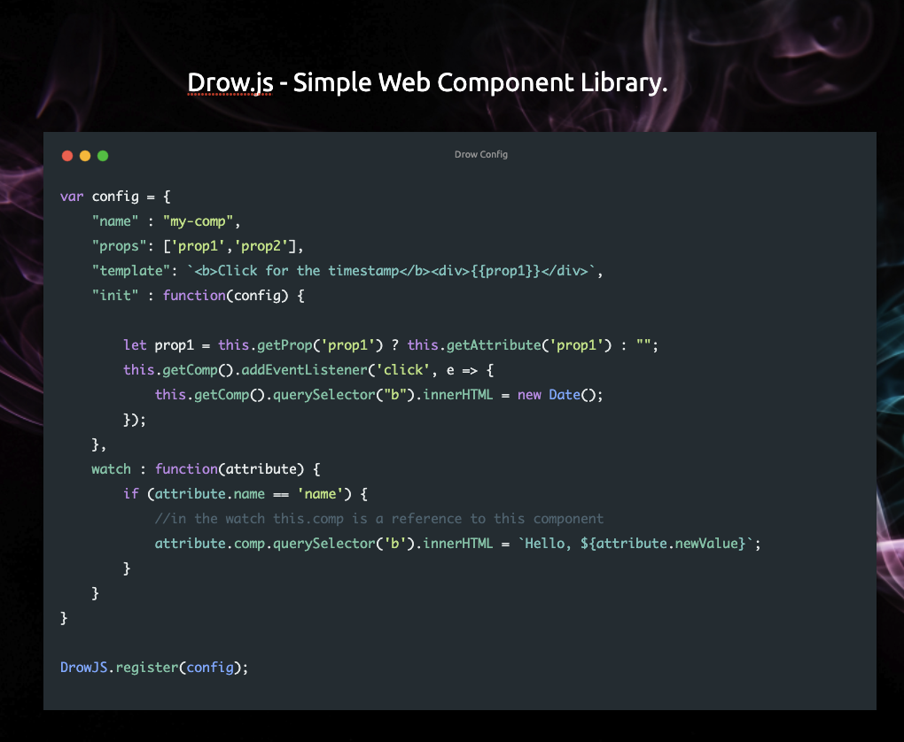

Drow
Simple Web Component Library for creating custom HTML Components.

Updates
Converted object references to Drow and drow internal elements instead of DrowJS
Setup
Include the drow.js in an html file:
<script src="drow.js"></script>
Or as an NPM Module
import Drow from 'drow';
Define a Drow Component
Define a Drow Object to setup a componet:
Component needs to have a
- name : name of HTML Custom Component
- props : properties set on the Custom Component
- template : standard html template
- init : function() - optional
- watch : function(obj) - optional
- templating : You can now use handlebars/mustache style variables in templates there are applied by prop name Ex: {{prop1}}
HTML
<my-comp prop1="AAA" prop2="BBB"> </my-comp>
JavaScript
var config = {
"name" : "my-comp",
"props": ['prop1','prop2'],
"template": `<div>
<div>Every time you click on timestamp it will update the time.</div>
<b>Click for the timestamp</b><div>{{prop1}}</div>
</div>`,
"init" : function(config) {
let prop1 = this.getProp('prop1') ? this.getAttribute('prop1') : "";
//in the init this.getComp() is used to obtain the component
this.getComp().addEventListener('click', e => {
this.getComp().querySelector("b").innerHTML = new Date();
});
},
watch : function(attribute) {
if (attribute.name == 'name') { //in the watch this.comp is a reference to this component
attribute.comp.querySelector('b').innerHTML = `Hello, ${attribute.newValue}`;
}
}
}
DrowJS.register(config);
Outline
//Define Component
<my-comp title="Great Name" link="https://something.com">
<!--
Web Components must be in primary-secondary name separated by dash ie my-comp
Componets and other HTML elements in the comp will be automatically added to the {{bind}} of the components template.
-->
</my-comp>
//Template for Component
template = `<div>
<div>Title: {{title}}</div>
<div>Link: {{link}}</div>
</div>`
//Component Config
var myComp = {
"name" : "my-comp",
"props": ['title','link'],
"template": template,
"init" : function(config) { //optional init
},
watch : function(attribute) { //optional watch -- hooks/useEffect
}
}
//Register Component
DrowJS.register(myComp); //using the config created earlier
Examples
Basic Example:
Setup from npm
First install dependencies:
npm install
Run commands:
npm run server
Credits
Author johnfacey.dev
Twitter twitter.com/johnfacey